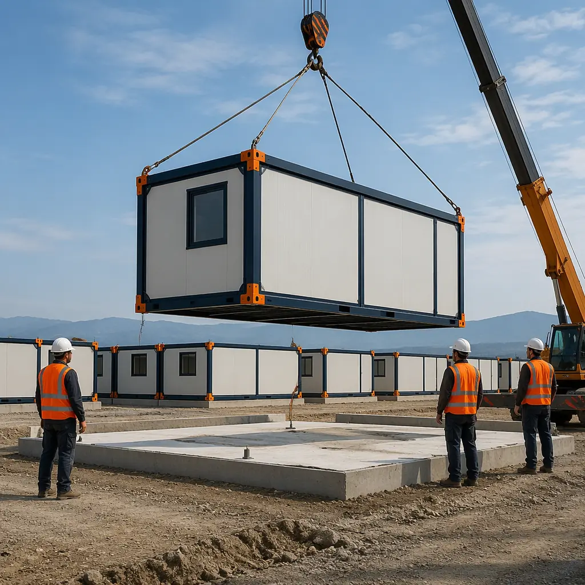
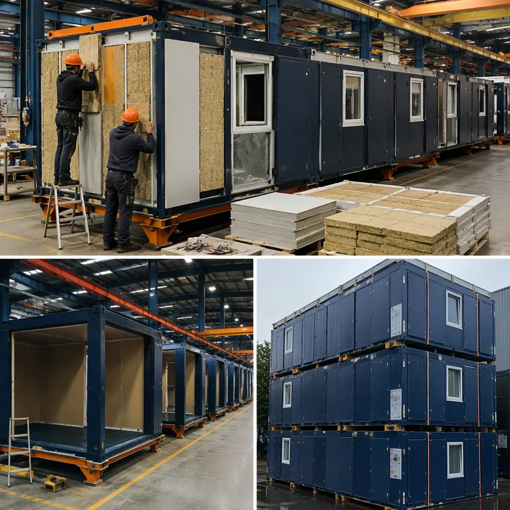
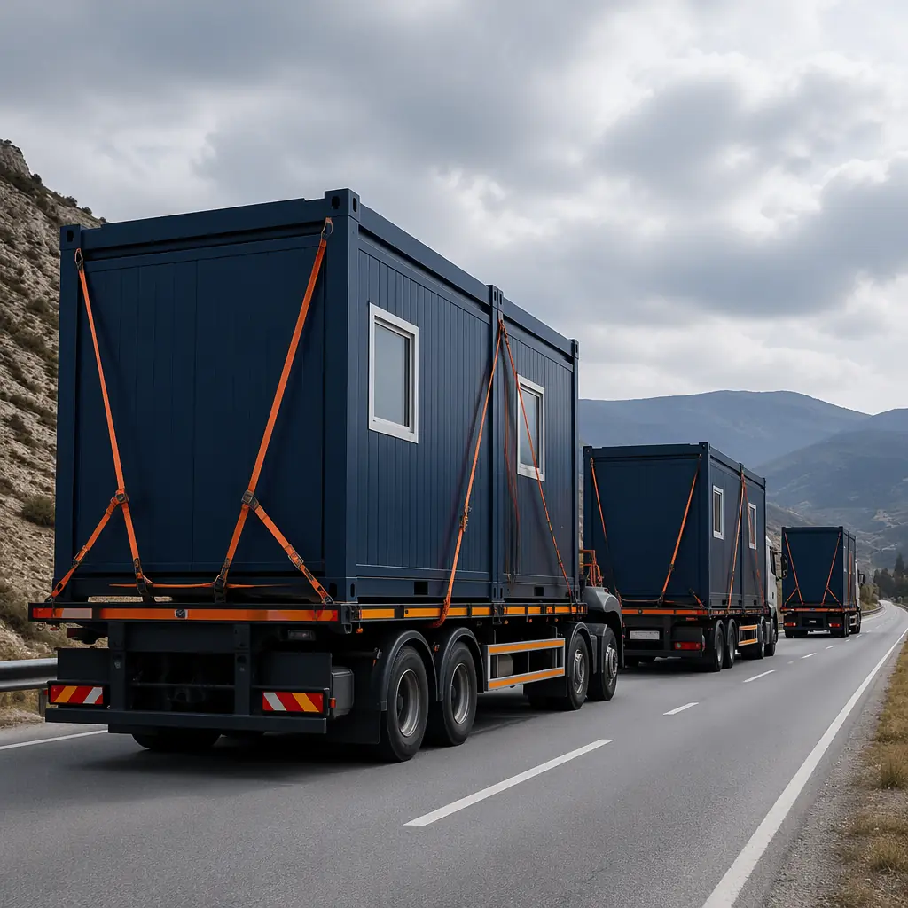

When a magnitude 7.8 earthquake struck Turkey and Syria in February 2023, 1.5 million people were left homeless within 48 hours. The international relief community mobilized — but temporary shelter solutions took weeks to arrive because the global supply chain for emergency housing was never designed for speed. Modular prefabricated construction changes this equation: factory-built emergency housing units, stockpiled or manufactured on demand, can be deployed and assembled at a disaster site in 7–21 days — compared to 3–6 months for traditional temporary structures. For government procurement agencies, humanitarian organizations, and disaster management authorities, modular emergency housing represents the single largest advance in shelter response capability since the introduction of the UNHCR family tent in the 1990s.

The Emergency Housing Gap: Why Traditional Approaches Fail
Global displacement reached 117 million people in 2025, according to UNHCR — the highest figure ever recorded. Natural disasters alone displaced 32 million people that year. Yet the standard emergency shelter response remains fundamentally unchanged: canvas tents, tarpaulin structures, or locally procured materials assembled by NGOs over a period of months. Each of these approaches carries specific failures:
- Canvas tents degrade in 6–12 months. The average UNHCR family tent lasts one winter before UV degradation, wind damage, and fabric fatigue render it uninhabitable. A 2024 IFRC study of post-earthquake Haiti found that 68% of tent shelters were unserviceable within 8 months — just as displaced populations were entering their second year of displacement.
- On-site construction is too slow for acute crises. Traditional construction at a disaster site requires clearing debris, pouring foundations, curing concrete (minimum 7 days for structural slabs), framing, roofing, and MEP installation — all in an active crisis zone with disrupted supply chains and limited skilled labor. The average field-built transitional shelter takes 14–22 weeks from ground-breaking to occupancy.
- Procurement fragmentation multiplies cost. Provincial governments, national disaster management authorities, and international NGOs each procure shelter solutions independently, losing economies of scale. A 2025 World Bank review of post-disaster shelter procurement across 12 countries found per-unit costs varied by a factor of 4.7 — from $3,200 to $15,100 per unit — driven entirely by procurement fragmentation, not unit specification differences.

How Modular Emergency Housing Works
Modular emergency housing units are self-contained living spaces — typically 160–320 sqft — manufactured entirely in a factory and transported to the deployment site as finished modules. Each unit arrives with completed walls, flooring, roofing, electrical wiring, plumbing rough-ins, windows, and doors. On site, a unit can be craned onto a simple gravel pad or screw-pile foundation and connected to utility hookups within 4–6 hours. A 50-unit emergency housing village can be operational in 5–7 days after modules arrive on site.
The Factory Production Advantage
MODURA's factory production integrates six parallel workstreams that field construction must sequence sequentially:
| Workstream | Field Construction | Factory Production |
|---|---|---|
| Steel frame welding | Week 1–2 | Day 1–3, in parallel |
| Wall panel fabrication | Week 2–3 | Day 1–4, in parallel |
| Electrical + plumbing | Week 4–6 | Day 3–6, in parallel |
| Interior finishing | Week 7–10 | Day 5–8, in parallel |
| QA inspection | Week 10–12 | Multi-gate inline QA |
| Total to completion | 12–14 weeks | 8–10 days per unit batch |
This parallelized production model means that when a government or relief agency places an order for 100 emergency housing units, the first batch of 25 units can ship within 14 days — not 14 weeks. For disaster response, that 10x speed difference is the gap between keeping displaced families in degrading tent camps and transitioning them to dignified, durable shelter before the first winter.

Durability and Standards: Designed for 15+ Years
Emergency housing has historically been treated as disposable infrastructure — but displacement is rarely temporary. The average refugee displacement now lasts 10.3 years, according to UNHCR data. Modular emergency housing units are designed for 15–20 year service lives, built to the same structural standards as permanent modular buildings. This changes the economics fundamentally: a unit procured for a post-earthquake response can serve as transitional housing for 3–5 years, then be disassembled, transported, and redeployed to a new crisis zone — yielding 3–4 lifecycles from a single procurement.
Structural specification: Cold-formed steel frame with welded connections, tested to withstand wind loads of 150 mph (ASCE 7-22 Risk Category II) and seismic loads per IBC 2024 Seismic Design Category D. Wall assemblies achieve R-19 insulation values. Roof loading capacity: 30 psf snow load + 15 psf live load — sufficient for deployment in alpine, coastal, and desert environments without modification.
Material choices for crisis environments: Interior wall panels are fiberglass-reinforced polymer (FRP) — non-porous, mold-resistant, and can be pressure-washed for infection control during disease outbreaks. Flooring is seamless epoxy resin, eliminating joints where vermin and moisture accumulate. These same material specifications are used in our modular healthcare facilities, where infection control is a non-negotiable requirement.

Procurement: How Governments and NGOs Buy Emergency Housing
Disaster response procurement is notoriously fractured — but modular housing introduces a procurement model that aligns with how governments and multilateral agencies actually operate:
Framework Agreements and Standing Orders
Rather than scrambling for quotes after a disaster strikes, governments can establish framework agreements with modular manufacturers before the crisis. A standing order for 500 units with scheduled production slots means that when a disaster is declared, manufacturing capacity is already reserved. Units ship within 7 days of activation, versus 60–90 days for competitive procurement during a crisis. This model mirrors how FEMA pre-positions water, meals, and generators — extending the pre-positioning concept to shelter infrastructure.
Financing Mechanisms
Emergency housing procurement typically draws from three funding pools: national disaster management budgets, multilateral development bank loans (World Bank CAT-DDO, ADB Disaster Resilience Program, IBRD contingent credit lines), and humanitarian pooled funds (CERF, country-based pooled funds). Modular construction's cost predictability — with factory-controlled pricing versus volatile field construction costs — makes it easier to structure drawdown requests against these facilities. Per-unit pricing for a 160 sqft emergency housing module, delivered to port, ranges from $18,000–$26,000 depending on specification tier and order volume. At 500-unit scale, per-unit cost drops to $16,500–$22,000 — competitive with field-built transitional shelters but delivered in 10–14 days, not 14 weeks.
For procurement officers evaluating total cost of ownership, the ROI case for modular construction shifts further when you factor in redeployment: a $22,000 unit that serves 3 crisis deployments over 15 years delivers shelter at roughly $7,300 per deployment — less than the cost of replacing canvas tents twice during a single displacement period.
From Emergency Shelter to Permanent Community
One of modular construction's underappreciated capabilities in disaster response is the pathway from temporary shelter to permanent housing. Unlike canvas tents or prefab trailers that must be demolished and landfilled, steel-framed modular units can be integrated into permanent housing developments once the emergency phase ends.
After the 2011 Christchurch earthquake, 1,200 modular housing units were deployed as transitional shelter. By 2014, 74% of those units had been relocated to permanent subdivisions and converted to social housing — a model that saved the New Zealand government an estimated NZ$180 million versus building new permanent housing stock. This same model applies to any modular disaster relief deployment: the units that served as emergency shelter for 2 years become the core of a permanent affordable housing development, as demonstrated in our modular apartments work.
For communities rebuilding after disasters, modular construction offers a second pathway: schools. Modular K-12 school buildings can be deployed alongside housing, restoring education within 30–60 days of a disaster — a critical factor in community recovery that humanitarian agencies consistently rank alongside shelter as a top priority.
Environmental Resilience: Building for the Next Disaster
Disaster-prone regions — coastal Bangladesh, seismic zones in the Ring of Fire, hurricane corridors in the Caribbean — need housing that survives the next disaster, not just the last one. Modular construction delivers this through precision engineering: every steel connection is welded in a controlled factory environment and repeatable within millimeter tolerances. Field construction, by contrast, introduces variability at every welded and bolted connection — variability that becomes failure points under extreme loads.
This resilience advantage aligns with the environmental benefits documented in our analysis of sustainable modular construction: factory production generates 50–75% less construction waste than field building, and the steel frames are 100% recyclable at end of life. For governments building disaster-resilient housing stock, the sustainability case and the resilience case are the same argument.
Procuring emergency shelter for a disaster-prone region? Contact our team to discuss framework agreements, standing order capacity, and modular housing specifications tailored to your operational requirements. We work directly with national disaster management authorities, multilateral development banks, and humanitarian procurement agencies.